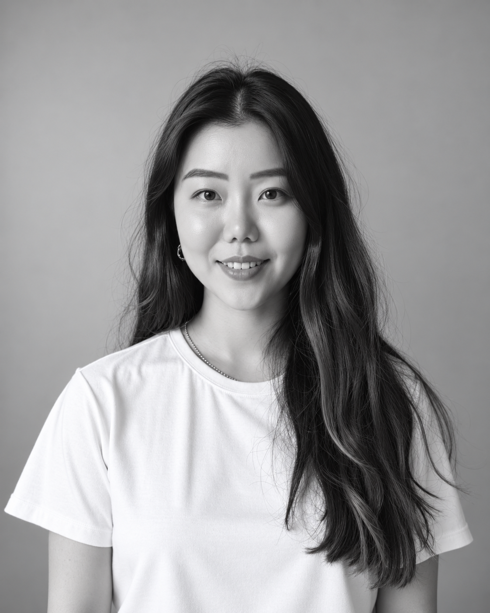

About
Understanding new contexts. Finding a way forward, together.

I’m Rachel Cho, founder of Second Context and a Product UX Consultant. I led product design as a founding designer at a U.S. healthcare startup backed by Y Combinator, and have worked on enterprise systems and product localization for global companies. My strength is understanding complex rules and user needs, then connecting that understanding to clear priorities and practical product design.
I funded my own education and built my career as an immigrant, navigating a new language and culture. Traveling as a digital nomad has broadened the way I understand people with different backgrounds and perspectives.
Today, I bring that experience to consulting with product teams and founders, and to mentoring junior designers and members of immigrant communities. Knowing how uncertain a new beginning can feel, I value working through challenges together and finding a practical next step.
- 40+Projects completed
- 12+Global & multinational companies worked with
- 27Countries visited